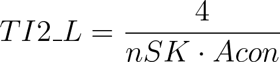

The 2D matrix-based descriptors1,2 are those calculated using one of the following matrices:
| ID | Matrix | Symbol |
|---|---|---|
| 1 | Adjacency matrix | A |
| 2 | Topological distance matrix | D |
| 3 | Laplace matrix | L |
| 4 | Chi matrix | X |
| 5 | Reciprocal squared distance matrix | H2 |
| 6 | Detour matrix | Dt |
| 7 | Distance/Detour matrix | D/Dt |
| 8-13 | Barysz matrix | Dz(w) |
| 14-19 | Burden matrix | B(w) |
These matrices are calculated on the H-depleted molecular graph.
The Adjacency matrix (A) is a square symmetric binary matrix. Its elements indicate whether pairs of vertices (atoms) are adjacent (value 1) or not (value 0) in the graph. The elements on the diagonal of this matrix are all zeros.
The Topological distance matrix (D) is a square symmetric matrix containing the distances, taken pairwise, between the atoms of a molecule. Given a pair of atoms, this distance is calculated counting the minimum number of bonds (shortest path) to go from one atom to the other.
The Laplace matrix (L) is a square symmetric matrix defined as follow:
where A is the adjacency matrix and De is the degree matrix that is a diagonal matrix containg for each diagonal entry the degree of the vertex. As for De, the diagonal entries of L represent the degree of the vertex (i.e., the number of bonds of the atom), while the other entries Lij are set to -1 if i and j are connected and 0 otherwise.
A set of descriptors has been defined specifically using the Laplace matrix as, for example, the algebraic connectivity (Acon, also known as Fiedler value or Fiedler eigenvalue) that is the second-smallest eigenvalue of L3.
The quasi-Wiener index (QW_L, also known as Kirchhoff number) is calculated as follows4,5:
where nSK is the number of atoms (H excluded) and λi is the i-th eigenvalue of L.
The first Mohar index (TI1_L) is calculated as follows6,7:
where nSK is the number of atoms and nBO is the number of bonds, in both cases H atoms are excluded.
The second Mohar index (TI2_L) is calculated as follows6,7:
where nSK is the number of atoms (H excluded) and Acon is the algebraic connectivity.
The spanning tree number (STN_L) is calculated as follows7:
where nSK is the number of atoms (H excluded) and λi is the i-th eigenvalue of L.
The Chi matrix (X) is a square symmetric matrix. Its elements, like for the adjacency matrix, are equal to 0 if they refer to non-adjacent vertices, otherwise they contain the edge connectivity.
The edge connectivity is calculated as follows: where δi and δj are the degrees of the vertex (i.e., the number of bonds of the atom) i and j respectively.
The reciprocal squared distance matrix (H2) is a square symmetric matrix containing the reciprocal squared topological distances, taken pairwise, between the atoms of a molecule.
The detour matrix (Dt) of a graph is a symmetric matrix whose entries are the length of the longest path from a pair of vertices (atoms).
The Distance/Detour matrix (D/Dt) is a square symmetric matrix containing the ratios between the shortest and the longest path of all pair of vertices (atoms)8.
In an acyclic graph the shortest and longest paths are the same for any pair of vertices (atoms), so this matrix would contain 0 in the diagonal and 1 elsewhere.
The calculation of the detour matrix can be time demanding for molecules including a big number of fused rings. In order to avoid an excessive increase of the calculation time a constraint can be defined. See Complex molecules
The Barysz matrix (Dz(w)) is a square symmetric matrix containing the weigthed distances, taken pairwise, between the atoms of a molecule 9:
where:
The bonds considered in the summation are the ones involved in the shortest path to go from i to j. If there is more than one path, the one with the minimum sum is taken.
The Burden matrix (B(w)) is a square symmetric matrix defined as follow:
where w is the atom property and πb is the bond order (see Barysz matrix)
The list of 2D matrix-based descriptors is in the Matrix-based descriptors chapter.
Consonni, V., & Todeschini, R. (2012). Multivariate Analysis of Molecular Descriptors. In Statistical Modelling of Molecular Descriptors in QSAR/QSPR (Vol. 2, pp. 111–147). Wiley-VCH Verlag GmbH & Co. KGaA. https://doi.org/10.1002/9783527645121.ch4 ↩︎
Grisoni, F., Reker, D., Schneider, P., Friedrich, L., Consonni, V., Todeschini, R., Koeberle, A., Werz, O., & Schneider, G. (2017). Matrix-based Molecular Descriptors for Prospective Virtual Compound Screening. Molecular Informatics, 36(1–2), 1600091. https://doi.org/10.1002/minf.201600091 ↩︎
Fiedler, M. (1973). Algebraic connectivity of graphs. Czechoslovak Mathematical Journal, 23(2), 298–305. https://doi.org/10.21136/cmj.1973.101168 ↩︎
Mohar, B., Babić, D., & Trinajstić, N. (1993). A Novel Definition of the Wiener Index for Trees. Journal of Chemical Information and Computer Sciences, 33(1), 153–154. https://doi.org/10.1021/ci00011a023 ↩︎
Gutman, I., Yeh, Y.-N., Lee, S.-L., & Luo, Y.-L. (1993). Some recent results in the theory of the Wiener number. Indian Journal of Chemistry -Section A (IJC-A), 32(08), 651–661. ↩︎
Mohar, B.. “Laplacian matrices of graphs.” Studies in Physical and Theoretical Chemistry 63 (1989): 1-8 ↩︎
Trinajstić, N., Babić, D., Nikolić, S., Plavšić, D., Amić, D., & Mihalić, Z. (1994). The Laplacian Matrix in Chemistry. Journal of Chemical Information and Computer Sciences, 34(2), 368–376. https://doi.org/10.1021/ci00018a023 ↩︎
Randić, M. (1997). On Characterization of Cyclic Structures. Journal of Chemical Information and Computer Sciences, 37(6), 1063–1071. https://doi.org/10.1021/ci960174t ↩︎
Ivanciuc, O. (2000). QSAR Comparative Study of Wiener Descriptors for Weighted Molecular Graphs. Journal of Chemical Information and Computer Sciences, 40(6), 1412–1422. https://doi.org/10.1021/ci000068y ↩︎